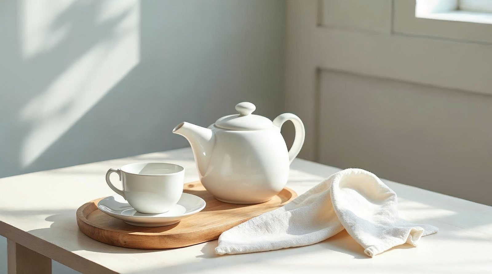
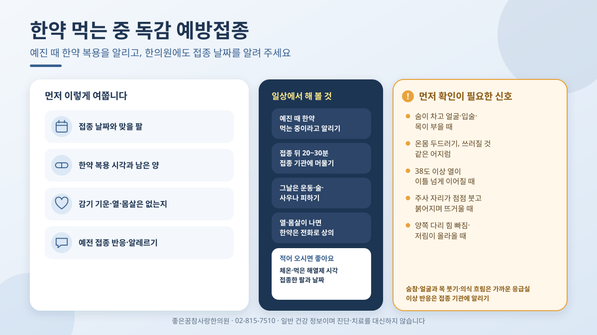

이종호 한의사 감수좋은꿈참사랑한의원 대표원장 (한의사 면허번호 19769)발행 2026-11-27 · 수정 2026-11-27
이 글의 차례
찬 바람이 불기 시작하면 독감 예방접종을 맞으러 가시는 분이 많아져요. 그 무렵 마침 한약을 드시고 계시면 이런 질문이 꼭 나오거든요. "한약 먹는 중인데 주사 맞아도 되나요?", "맞은 날 한약은 어떻게 해요?"
이런 걸 물어보시는 게 당연해요. 몸에 들어가는 게 두 가지나 겹치니 괜히 마음이 쓰이는 거죠. 그래서 저는 먼저 둘을 나눠서 말씀드려요. '접종을 할지 말지'와 '한약을 어떻게 먹을지'는 다른 얘기예요.
접종을 할지는 접종 기관의 의사가 그날 몸 상태를 예진해서 판단해요. 그러니 한약을 드시고 있다면 예진표를 쓸 때나 예진 때 한약을 먹고 있다고 알려 주시면 됩니다. 한약을 어떻게 이어 갈지는 제 쪽에서 같이 정할 일이고요. 한의원에도 접종 날짜를 미리 알려 주시면, 지금 드시는 처방을 기준으로 접종 전후 복용을 어떻게 할지 함께 정할 수 있어요.
따로 안내받은 게 없고 접종 뒤 몸 상태가 평소와 같다면 하던 대로 이어 가시는 경우가 많아요. 다만 열이 나거나 몸살 기운, 속 불편이 생기면 그날 복용을 이어 갈지 잠시 쉴지 전화로 먼저 상의해 주세요. 침이나 추나, 체외충격파 진료가 잡혀 있다면 접종한 날짜와 팔을 알려 주시면 그 자리를 피하거나 일정을 조정해 드릴게요.
왜 접종과 한약 일정을 함께 살펴야 할까요
- 독감 예방접종 뒤에는 주사 맞은 자리가 붓고 아프거나, 하루 이틀 미열과 근육통, 피로, 두통이 생기는 분이 있습니다. 이런 반응은 대개 며칠 안에 가라앉지만, 같은 시기에 한약을 먹고 있으면 몸의 변화가 접종 때문인지 한약 때문인지 헷갈리기 쉽습니다.
- 접종 뒤 열이 나서 해열진통제를 먹게 되면 한약과 먹는 간격을 다시 정해야 할 수 있습니다.
- 몸살 기운이 있거나 입맛이 떨어진 날에는 평소 잘 드시던 한약도 속에 부담스럽게 느껴질 수 있습니다.
- 주사 맞은 팔에 바로 침이나 체외충격파 같은 자극을 더하면 붓기와 통증이 어느 쪽에서 온 것인지 구분하기 어렵고, 아픈 자리에 부담이 겹칩니다.
- 접종 당일에는 무리한 운동이나 음주, 사우나처럼 몸에 부담을 주는 일을 피하라는 안내가 흔한데, 몸을 많이 움직이는 진료도 같은 이유로 하루 미루는 편이 편할 수 있습니다.
- 감기 기운이 있거나 열이 나는 날에는 접종 기관에서 접종을 미루자고 할 수 있어, 한의원 진료와 접종 날짜를 미리 맞춰 두면 일정이 덜 꼬입니다.
- 어르신이나 만성 질환이 있는 분, 어린아이는 접종 일정을 챙기는 경우가 많은데, 이런 분일수록 드시는 약과 한약이 여러 가지인 경우가 많아 일정을 한곳에 정리해 두면 혼동이 줄어듭니다.
- 한의학에서는 몸이 지쳐 있을 때 같은 일에도 몸살처럼 무겁게 느끼기 쉽다고 보아, 접종 전후 며칠은 잠과 식사, 몸의 온기를 평소보다 조금 더 챙기도록 권합니다. 이것이 접종 결과를 바꾼다는 뜻은 아니며, 접종 뒤 며칠을 덜 힘들게 지내기 위한 생활 안내입니다.
먼저 이렇게 여쭙니다
- 접종 예정일과 접종 기관, 다른 예방접종도 함께 맞는지 여쭙니다.
- 지금 드시는 한약을 언제부터 먹었는지, 하루 몇 번 몇 시에 먹는지, 며칠분이 남았는지 여쭙니다.
- 요즘 감기 기운이나 열, 기침, 몸살이 있는지 여쭙니다.
- 예전에 예방접종 뒤 열이 오래가거나 심하게 붓고 아팠던 적, 알레르기 반응이 있었던 적이 있는지 여쭙니다.
- 음식이나 약에 알레르기가 있는지 여쭙니다.
- 혈액을 묽게 하는 약을 드시는지 여쭙니다. 주사 자리에 멍이 들기 쉬워 미리 알면 좋습니다.
- 임신 중이거나 임신 가능성이 있는지, 수유 중인지 여쭙니다.
- 침, 추나, 체외충격파처럼 가까운 날짜에 잡힌 진료가 있는지도 함께 여쭙니다.
일상에서 먼저 해 볼 수 있는 것
접종 전
- 접종 날짜가 정해지면 한의원에 전화로 알려 주세요. 지금 드시는 처방을 기준으로 접종 전후 복용을 어떻게 할지 함께 정합니다.
- 예진 때 한약을 먹고 있다고 말하고, 한약 이름이나 처방 메모가 있으면 사진을 보여 드립니다. 혈압약이나 당뇨약처럼 다른 약도 빠짐없이 알립니다.
- 전날 밤에는 평소보다 일찍 자고, 접종 당일 아침은 거르지 않습니다. 빈속에 긴장하면 주사를 맞을 때 어지럽기 쉽습니다.
- 팔을 걷기 쉬운 옷을 입고, 평소 주로 쓰지 않는 쪽 팔에 맞으면 다음 날 일상이 덜 불편합니다.
- 열이 있거나 감기 기운이 심한 날에는 예진 때 그대로 말씀하시고, 접종 날짜를 미룰지는 의사의 판단을 따릅니다.
- 국가에서 지원하는 접종 대상인지, 접종 기간이 언제까지인지는 보건소나 가까운 접종 기관에 미리 확인합니다.
접종 당일
- 접종 뒤 20~30분은 접종 기관에 머물며 숨이 차거나 어지러운 반응이 없는지 살펴봅니다.
- 그날은 무리한 운동과 술, 사우나를 피하고, 주사 맞은 자리를 문지르거나 세게 누르지 않습니다.
- 한약은 따로 안내받은 것이 없고 몸이 평소와 같다면 정해진 시각에 드시되, 열이나 몸살 기운, 메스꺼움이 생기면 그날 복용을 이어 갈지 잠시 쉴지 먼저 전화로 여쭤 주세요.
- 접종한 날짜와 시각, 맞은 팔, 접종 이름을 휴대폰 메모에 적어 둡니다.
접종 뒤 이틀
- 체온을 아침과 저녁에 재어 적고, 주사 자리의 붓기와 통증, 몸살, 두통이 언제 시작해 언제 가라앉는지 적습니다.
- 열이 나서 해열진통제를 먹었다면 약 이름과 먹은 시각을 적어 두고, 한약과의 간격은 한의원에 여쭤 정합니다.
- 주사 자리가 붓고 아프면 깨끗한 수건에 싼 차가운 것을 잠시 대어 봅니다.
- 물을 평소보다 조금 더 마시고, 잠을 충분히 자며, 기름진 음식보다 따뜻하고 소화가 편한 음식을 먹습니다.
- 몸살 기운이 있는 날에는 무리해서 운동하거나 늦게까지 일하기보다 일찍 쉬고, 다음 날 몸 상태를 보며 일상을 이어 갑니다.
한의원 진료가 잡혀 있다면
- 접종한 날과 그다음 날 침이나 체외충격파 진료가 잡혀 있다면 접종한 팔을 알려 주세요. 그 자리를 피해 진료하거나, 몸살 기운이 있으면 일정을 하루 이틀 뒤로 조정합니다.
- 추나요법처럼 몸을 많이 움직이는 진료는 접종 뒤 몸살 기운이 가라앉은 다음으로 미루는 편이 편할 수 있어, 방문 전 전화로 상의해 주세요.
- 가족이 함께 한약을 먹고 있다면 각자의 접종 날짜를 한곳에 적어 두면 챙기기 쉽습니다.

상황별 예시
- 예를 들어 점심시간에 회사 근처에서 독감 예방접종을 맞고 저녁에 한의원 침 진료가 잡혀 있는 직장인이라면, 예진 때 한약을 먹고 있다고 알리고, 저녁 진료 때 왼팔에 맞았다고 말씀해 그 자리를 피해 진료를 받습니다. 그날 저녁 운동과 회식은 다음으로 미룹니다.
- 예를 들어 혈압약과 함께 한약을 드시는 60대가 접종 다음 날 미열과 근육통으로 해열진통제를 드신 경우, 약 이름과 먹은 시각을 적어 두고 한의원에 전화해 그날 한약을 이어 갈지, 하루 쉬었다가 다시 시작할지 여쭙니다.
- 예를 들어 한약을 먹던 초등학생이 접종 뒤 저녁에 열이 오르고 보채는 경우, 보호자는 체온과 시각, 먹인 해열제를 적고 한약은 잠시 쉬며 한의원에 먼저 여쭙습니다. 열이 이틀 넘게 이어지거나 아이가 축 처지면 소아청소년과 진료를 받습니다.
- 예를 들어 노량진에서 시험을 앞둔 수험생이라면, 접종 뒤 하루 이틀 몸이 무거울 수 있어 시험 직전 며칠을 피해 접종 날짜를 잡고, 한의원에도 시험과 접종 일정을 함께 알려 복용 계획을 맞춥니다.
- 예를 들어 같은 날 다른 예방접종도 함께 맞은 경우에는 어느 팔에 무엇을 맞았는지 적어 두고, 한의원 진료 때 함께 알려 주시면 진료할 자리와 일정을 정하기 쉽습니다.
자주 하는 오해
- 한약을 먹고 있으면 독감 예방접종을 맞지 않아도 된다고 여기는 분이 있습니다. 한약은 예방접종을 대신하지 않으며, 접종 여부는 접종 기관에서 상의해 정합니다.
- 접종을 맞으려면 한약을 미리 끊어야 한다고 단정하기 쉽지만, 처방과 몸 상태에 따라 다르니 스스로 끊기보다 먼저 여쭤 주세요.
- 접종 뒤 미열이나 몸살이 나면 한약이 맞지 않아서라고 여기기 쉽습니다. 접종 뒤 흔한 반응일 수 있어, 언제 무엇이 시작되었는지 기록해 두면 구분하는 데 도움이 됩니다.
- 접종한 날 아픈 팔을 주무르면 빨리 풀린다고 생각하기 쉽지만, 문지르거나 세게 누르면 붓기와 통증이 더할 수 있습니다.
- 접종하고 나면 바로 독감을 막아 준다고 여기기 쉽지만, 몸이 방어할 준비를 갖추기까지 보통 2주쯤 걸린다고 알려져 있어, 그사이에도 손 씻기와 잠을 챙깁니다.
스스로 점검해 보세요
- 예진 때 한약을 먹고 있다고 말할 준비가 되어 있다.
- 한의원에 접종 날짜를 알렸다.
- 접종 전날 충분히 자고, 당일 아침을 먹었다.
- 예전에 예방접종 뒤 심하게 붓거나 열이 오래간 적이 있다.
- 음식이나 약에 알레르기가 있다.
- 혈액을 묽게 하는 약을 먹고 있다.
- 접종 다음 날 침이나 추나, 체외충격파 진료가 잡혀 있다.
네 번째부터 일곱 번째 항목에 해당하면 예진 때와 한의원 진료 때 미리 말씀해 주세요.
한의원에서 함께 살필 수 있는 경우
- 한약을 먹는 중에 접종 일정이 잡혀 복용 계획을 정하고 싶은 경우
- 접종 뒤 몸살과 피로가 가라앉은 뒤에도 기운이 돌아오지 않고 입맛과 잠이 흔들리는 경우
- 해마다 겨울이면 쉽게 지치고 감기를 자주 앓아 생활 리듬을 함께 살피고 싶은 경우
- 접종과 겹친 기간에 쉬었던 한약을 다시 시작하는 방법을 정하고 싶은 경우
좋은꿈참사랑한의원에서는 한약을 드시는 분이 접종 일정을 알려 오시면, 처방받은 날과 남은 양, 복용 시각, 접종 날짜를 먼저 차례로 확인합니다. 진료실에 오시면 맥부터 짚어 보고, 혀와 배를 살펴 지금 몸이 지쳐 있는지, 열이 남아 있는지, 소화와 잠은 어떤지를 확인합니다.
그 결과에 따라 접종 전후 며칠의 복용을 이어 갈지 잠시 쉴지, 쉬었다면 언제 어떻게 다시 시작할지를 정하고, 침이나 추나, 체외충격파 같은 진료 일정도 접종 날짜를 피해 조정합니다. 한약은 원내에서 달이고 대표원장이 약재를 검수하므로, 처방 이름과 구성에 대해 궁금한 점은 진료 때 편하게 물어보세요.
독감 예방접종은 접종 기관에서 받으시고, 접종 가능 여부와 이상 반응에 대한 판단은 접종 기관과 의과 진료를 따릅니다. 다시 오시면 접종 뒤 며칠이 어땠는지, 한약을 다시 드신 뒤 몸의 변화가 있었는지를 이어서 여쭙습니다.
얼마나 지켜보고 언제 상담할까요
- 주사 자리의 붓기와 통증, 미열, 근육통, 피로는 대개 하루 이틀 사이 나타났다가 며칠 안에 가라앉습니다.
- 접종 뒤 열이나 몸살로 한약을 쉬었다면, 증상이 가라앉은 뒤 다시 시작하는 방법을 전화로 여쭤 정합니다. 남은 한약을 한꺼번에 몰아서 드시지 않습니다.
- 38도 이상의 열이 이틀 넘게 이어지거나, 주사 자리의 붓기와 붉은 기운이 점점 넓어지면 접종 기관이나 의과 진료를 받습니다.
- 진료 시간은 평일 09:30~20:00(점심 13:00~14:00), 토·일·공휴일 09:30~15:00(점심시간 없음)입니다. 복용 상담은 방문 전 전화로도 여쭤 주시고, 접수 마감 시각도 전화로 확인해 주세요.
- 아래 신호가 있으면 지켜보지 말고 먼저 진료를 받습니다.
이렇게 기록해 오시면 상담이 쉬워집니다
접종 뒤 며칠은 몸이 평소와 조금 다르게 느껴질 수 있어요. 원래 그래요. 그 며칠을 짧게 적어 두시면, 한약을 이어 갈지 쉴지 정할 때 훨씬 또렷해지거든요.
- 접종 날짜와 시각, 접종 기관, 맞은 팔과 접종 이름
- 접종 뒤 아침과 저녁 체온, 주사 자리 붓기와 통증의 변화
- 먹은 해열진통제나 감기약의 이름과 먹은 시각
- 한약을 먹은 날과 쉰 날, 남은 파우치 수
- 잠, 입맛, 소화, 대변의 변화
- 예전 예방접종 뒤 반응과 알레르기, 복용 중인 다른 약
체온은 아침저녁 두 번이면 충분하고, 나머지는 한 줄 메모로 남겨 두셔도 돼요. 내년 접종 때도 이 기록이 그대로 참고가 됩니다.
처방을 접종 일정에 맞추는 건 제가 할게요. 대신 하나만 부탁드려요. 접종 날짜가 잡히면 그날 바로 한의원에 한 번 알려 주세요. 딴 건 하시던 대로 편하게 지내셔도 돼요.
겨울을 앞두고 몸을 챙기시는 그 마음이 참 좋아요. 궁금한 건 그냥 편하게 물어보세요.
이런 증상은 먼저 확인이 필요합니다
- 접종 뒤 숨이 차거나 쌕쌕거리고, 얼굴이나 입술, 혀, 목이 붓는 경우
- 온몸에 두드러기가 번지거나, 어지러워 쓰러질 것 같은 경우
이런 신호가 있으면 한의원보다 가까운 병원이나 응급실을 먼저 찾으세요.
관련 글

여쭙는 것
- 접종 예정일과 접종 기관, 다른 예방접종도 함께 맞는지 여쭙니다.
- 지금 드시는 한약을 언제부터 먹었는지, 하루 몇 번 몇 시에 먹는지, 며칠분이 남았…
- 요즘 감기 기운이나 열, 기침, 몸살이 있는지 여쭙니다.
생활에서 해 볼 것
- 접종 날짜가 정해지면 한의원에 전화로 알려 주세요. 지금 드시는 처방을 기준으로 접…
- 예진 때 한약을 먹고 있다고 말하고, 한약 이름이나 처방 메모가 있으면 사진을 보여…
- 전날 밤에는 평소보다 일찍 자고, 접종 당일 아침은 거르지 않습니다. 빈속에 긴장하…
한의원에서 함께 살필 것
- 한약을 먹는 중에 접종 일정이 잡혀 복용 계획을 정하고 싶은 경우
- 접종 뒤 몸살과 피로가 가라앉은 뒤에도 기운이 돌아오지 않고 입맛과 잠이 흔들리는 경우
- 해마다 겨울이면 쉽게 지치고 감기를 자주 앓아 생활 리듬을 함께 살피고 싶은 경우
먼저 확인이 필요한 신호
- 접종 뒤 숨이 차거나 쌕쌕거리고, 얼굴이나 입술, 혀, 목이 붓는 경우
- 온몸에 두드러기가 번지거나, 어지러워 쓰러질 것 같은 경우
한눈에 보는 표
| 구분 | 핵심 |
|---|---|
| 여쭙는 것 | 접종 예정일과 접종 기관, 다른 예방접종도 함께 맞는지 여쭙니다. 지금 드시는 한약을 언제부터 먹었는지, 하루 몇 번 몇 시에 먹는지, 며칠분이 남았는지 여쭙니다. |
| 생활에서 해 볼 것 | 접종 날짜가 정해지면 한의원에 전화로 알려 주세요. 지금 드시는 처방을 기준으로 접종 전후 복용을 어떻게 할지 함께 정합니다. 예진 때 한약을 먹고 있다고 말하고, 한약 이름이나 처방 메모가 있으면 사진을 보여 드립니다. 혈압약이나 당뇨약처럼 다른 약도 빠짐없이 알립니다. |
| 한의원에서 함께 살필 것 | 한약을 먹는 중에 접종 일정이 잡혀 복용 계획을 정하고 싶은 경우 접종 뒤 몸살과 피로가 가라앉은 뒤에도 기운이 돌아오지 않고 입맛과 잠이 흔들리는 경우 |
| 먼저 확인이 필요한 신호 | 접종 뒤 숨이 차거나 쌕쌕거리고, 얼굴이나 입술, 혀, 목이 붓는 경우 온몸에 두드러기가 번지거나, 어지러워 쓰러질 것 같은 경우 |
자주 묻는 질문
한약을 먹는 중인데 독감 예방접종을 맞아도 되나요?
접종 여부는 접종 기관의 의사가 예진으로 판단합니다. 예진 때 한약을 먹고 있다고 알리고, 한의원에도 접종 날짜를 알려 주시면 접종 전후 복용을 함께 정해 드립니다.
접종한 날 한약은 몇 시간 띄워서 먹어야 하나요?
모든 분께 똑같이 정해진 간격이 있는 것은 아니어서, 처방과 몸 상태를 보고 정합니다. 몸이 평소와 같다면 하던 시각에 드시는 경우가 많고, 열이나 몸살 기운이 있으면 그날은 먼저 전화로 여쭤 주세요.
접종 뒤 열이 나서 해열제를 먹었는데 한약도 먹어도 되나요?
해열제 이름과 먹은 시각을 알려 주시면 한약과의 간격과 이어 갈지 여부를 함께 정합니다. 열이 내린 뒤 다시 시작할 때도 남은 한약을 몰아서 드시지 않습니다.
접종한 팔에 침이나 체외충격파를 받아도 되나요?
접종한 날과 그다음 날에는 그 자리를 피하는 편이 붓기와 통증을 구분하기 쉽습니다. 진료 때 접종한 날짜와 팔을 알려 주시면 그에 맞춰 진료 방법과 일정을 정합니다.
아이가 한약을 먹고 있는데 예방접종 일정이 잡혔어요.
아이도 예진 때 한약을 먹고 있다고 알리고, 한의원에도 접종 날짜를 알려 주세요. 접종 뒤 열이 나거나 보채면 체온과 먹인 약을 적어 두고, 한약을 이어 갈지는 먼저 여쭤 주시면 됩니다.
좋은꿈참사랑한의원은 재진 때 지난번 이야기부터 이어서 여쭙니다. 진료시간과 예약은 오시는 길에서 확인하세요.
어디서 상담받을 수 있나요?
좋은꿈참사랑한의원은 서울 동작구 만양로2길 2 신성빌딩 3층·5층(서울 동작구 상도동, 7호선 상도역 3번 출구 근처)에 있습니다. 한의사 3명(이종호 대표원장, 조영기 수석진료원장, 정원영 진료원장)이 진료합니다. 진료시간은 평일 09:30~20:00(점심 13:00~14:00), 토·일·공휴일 09:30~15:00이며, 방문 전 전화로 확인을 권합니다. 예약은 네이버 예약, 카카오톡 상담, 전화 02-815-7510로 받습니다.
이 글은 일반적인 건강 정보이며 개인의 진단이나 치료를 대신하지 않습니다. 증상이 있거나 복용 중인 약이 있다면 진료를 통해 확인하세요. 치료 효과는 개인마다 다를 수 있습니다.
작성 기준: 일반적으로 알려져 있는 건강 정보를 참고해 정리했습니다(대표원장 감수). 증상 기록은 1~2주 동안 하루 1회, 비슷한 시간에 적어 오시면 지난 상태와 비교하기 쉽습니다.